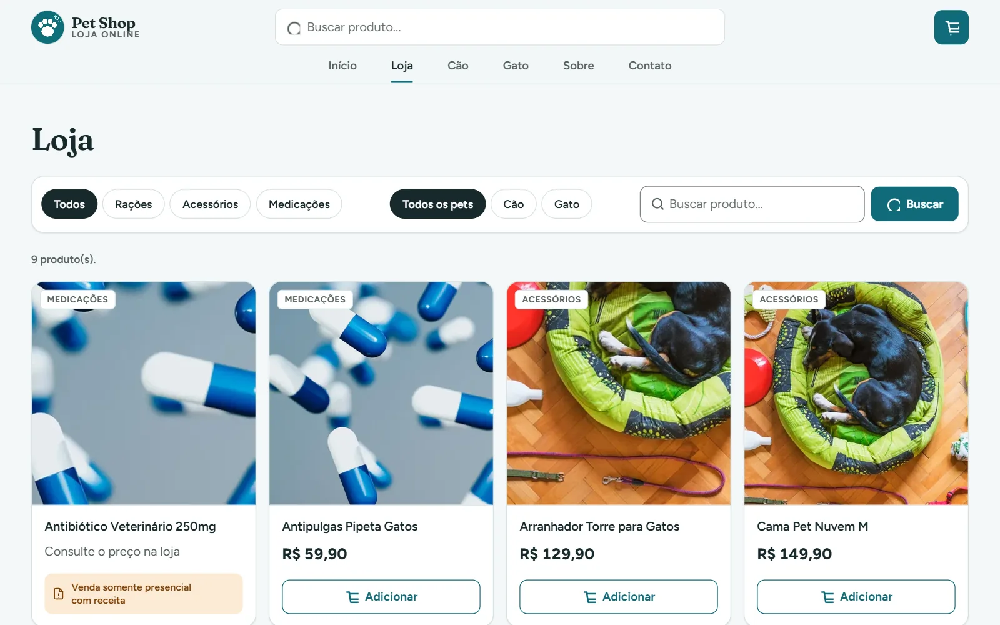
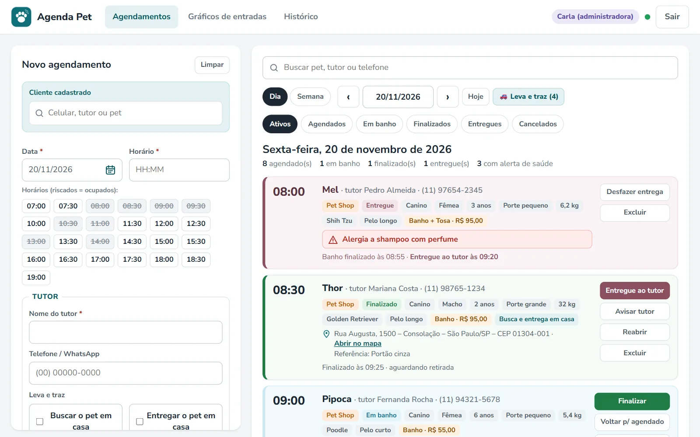
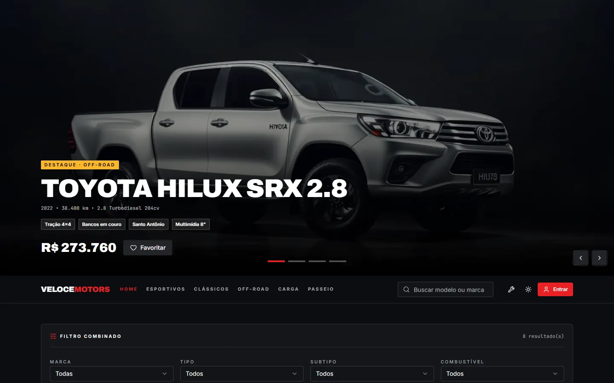
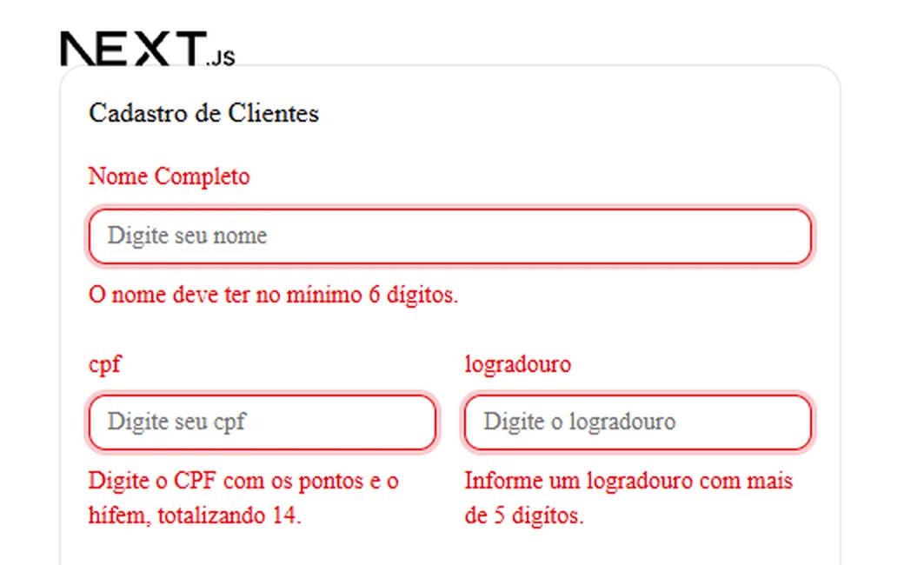
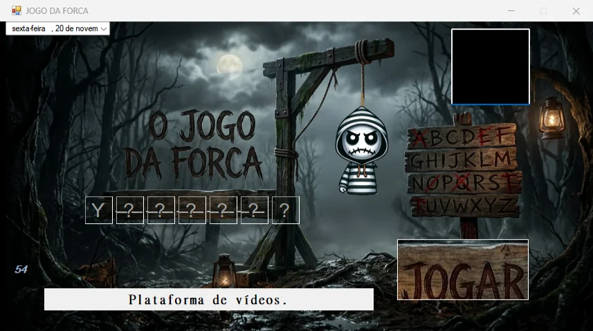
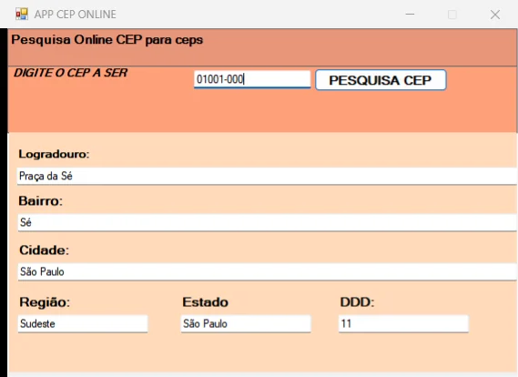
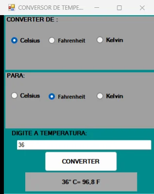
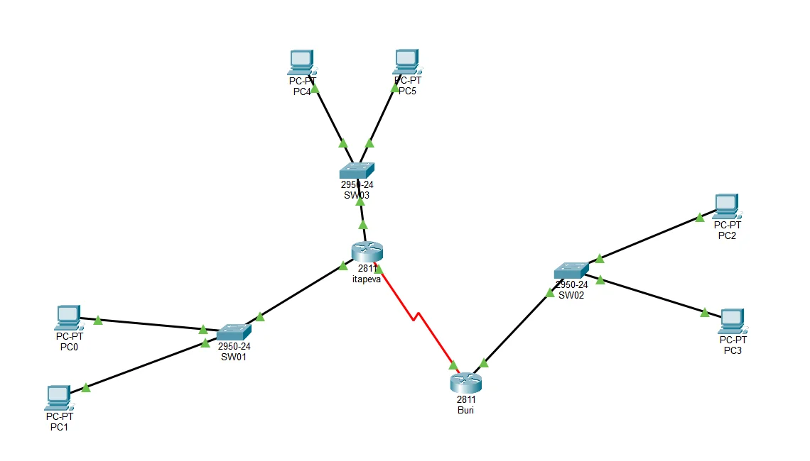
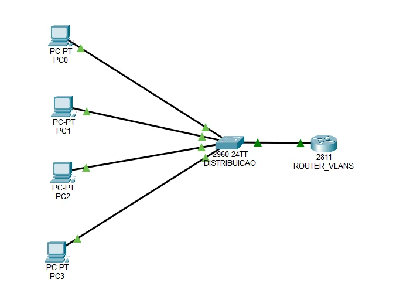
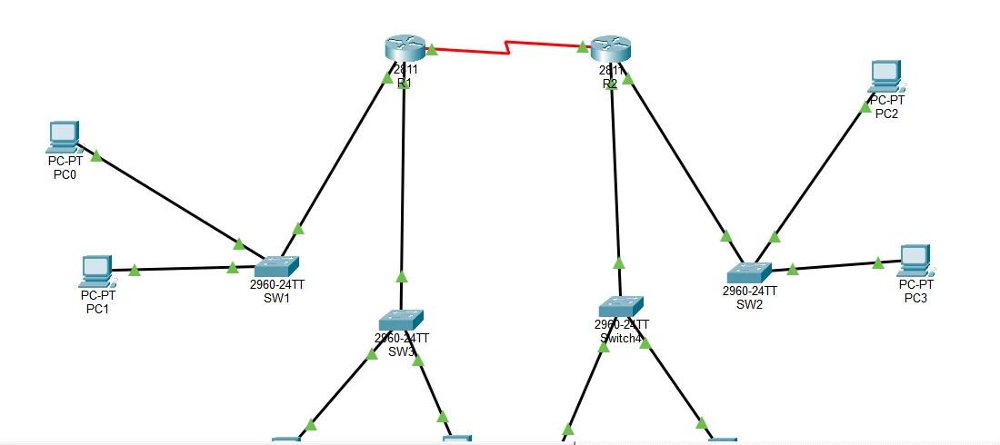

Loja online + API
Loja de rações, acessórios e medicações com painel e API REST para app. Regras de venda de medicamentos, dados pessoais criptografados e LGPD.
- Next.js
- TypeScript
- PostgreSQL
- Drizzle
Sou o Thiago, estudante do Técnico em Desenvolvimento de Sistemas na Etec Dr. Demétrio Azevedo Jr. Transformo planilhas e processos manuais em sistemas web e aplicativos simples de usar, feitos sob medida para quem vai usar.
Projetos que desenvolvi por conta própria, alguns já em uso de verdade.

Gestão financeira e de produção para uma empresa de extração de resina: caixa, cartões, projeção de saldo entre meses, cargas, produtores e conta corrente.
Ver estudo de caso →

Agenda em tempo real com trava de horário no banco, leva e traz com rota de várias paradas no Google Maps, cobrança por serviço e porte e fechamento de caixa do dia com histórico imutável.
Ver estudo de caso →

Loja de rações, acessórios e medicações com painel e API REST para app. Regras de venda de medicamentos, dados pessoais criptografados e LGPD.

Três saldos por produto que só mudam por movimentações, PDV com leitor de código de barras, fechamento de caixa e log de auditoria que ninguém apaga.

Agenda compartilhada entre o pet shop e o banho e tosa, com tempo real, aviso no WhatsApp e permissões por setor. Foi a base do Banho e Tosa.

Versão só de estoque: o que vai para o consultório, o que é usado e o que se perde ou some na contagem, com o prejuízo em reais.

Sistema de vendas desktop que funciona sem internet: vários pagamentos na mesma venda, estoque, caixa com sangria e fiado.
Técnico em Desenvolvimento de Sistemas · projetos do 3º módulo, separados por matéria.

Plataforma que prepara jovens para a vida adulta: trilhas curtas sobre dinheiro, carreira e bem-estar digital, jornada com níveis e conquistas, controle de gastos e glossário.
Ver projeto →

Login social com Google e Facebook, escolha de classe (Piloto ou Copiloto), ranking dos corredores e um jogo de corrida em primeira pessoa desenhado em canvas.

Loja de carros seminovos com destaques em carrossel, filtro combinado, favoritos, simulador de financiamento (Tabela Price) e painel para cadastrar veículos.

Os 254 países e territórios com bandeira, paginação e página de detalhes (capital, população, idiomas e moedas), consumindo a API REST Countries com cache diário.

Formulário com validação campo a campo (nome, CPF com máscara, telefone, e-mail, CEP e endereço) e mensagens claras de erro antes de enviar.
Chat em tempo real: grupos públicos e privados, fotos, áudio, arquivos, enquetes, confirmação de leitura, status online e reconexão automática com fila de envio.

App que consome uma API REST: lista paginada de postagens, tela de detalhes, nova postagem e mensagens de erro claras quando não há conexão.
Lê as teclas e o resultado em voz alta e tem tema claro e escuro.

Palavras com dica lidas de um arquivo, cronômetro de 60 segundos, música de fundo e efeitos sonoros. O boneco aparece por partes a cada erro.

Digita o CEP e o app busca o endereço na API ViaCEP: logradouro, bairro, cidade, região, estado e DDD.

Converte entre Celsius, Fahrenheit e Kelvin.

Dois roteadores ligados por link serial, cada um com suas redes locais, switches e computadores.

Computadores separados em VLANs num switch de distribuição, com um roteador fazendo a comunicação entre elas.

Dois roteadores interligados atendendo quatro segmentos de rede. Uma das sete atividades práticas do semestre.
Converso com quem usa o sistema e vejo as planilhas e o jeito de trabalhar de hoje.
Explico a solução em palavras simples antes de escrever o código.
Testes automatizados conferem as contas e as telas antes de cada entrega.
As atualizações vão ao ar sozinhas, e as melhorias seguem conforme o uso.
Uso IA (Claude Code) como parceira de desenvolvimento para entregar mais rápido. As decisões, os testes e o contato com o cliente ficam comigo.